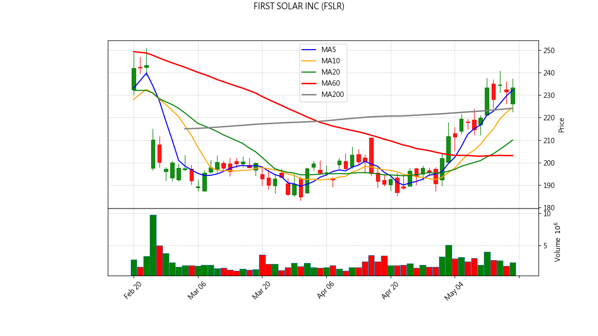
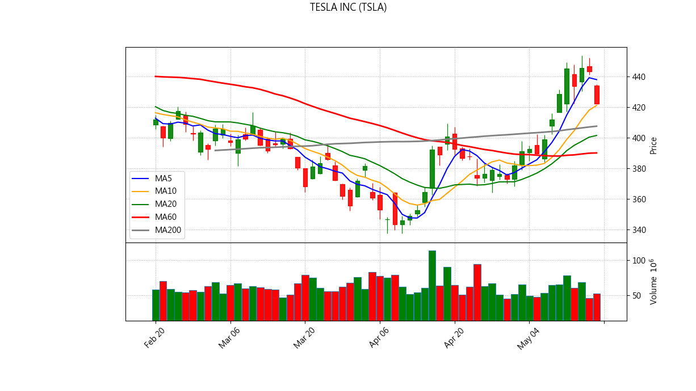

📊 NYSE/US Stock Inventory AI Diagnosis
Generated at: 2026-05-18 21:04:19
ADVANCED MICRO DEVICES (AMD)
Current Price: $424.10
💼 Portfolio Status
Avg Cost: $262.81
Quantity: 7
Unrealized P/L: $1,129.01
Return Rate: 61.37%
📋 Analysis Signals
⚠️ 【Break below 5MA】Short-term weakness.

✨ AI Comprehensive Diagnosis
ARISTA NETWORKS INC (ANET)
Current Price: $141.97
💼 Portfolio Status
Avg Cost: $145.10
Quantity: 17
Unrealized P/L: $-53.16
Return Rate: -2.16%
📋 Analysis Signals
🚨 【Break below 10MA】Trend broken, consider exit.

✨ AI Comprehensive Diagnosis
FABRINET (FN)
Current Price: $722.04
💼 Portfolio Status
Avg Cost: $684.61
Quantity: 7
Unrealized P/L: $262.03
Return Rate: 5.47%
📋 Analysis Signals
✅ No major sell signals triggered.

✨ AI Comprehensive Diagnosis
FIRST SOLAR INC (FSLR)
Current Price: $233.37
💼 Portfolio Status
Avg Cost: $216.09
Quantity: 6
Unrealized P/L: $103.66
Return Rate: 7.99%
📋 Analysis Signals
✅ No major sell signals triggered.

✨ AI Comprehensive Diagnosis
ALPHABET INC-CL C (GOOG)
Current Price: $393.32
💼 Portfolio Status
Avg Cost: $329.63
Quantity: 16
Unrealized P/L: $1,018.98
Return Rate: 19.32%
📋 Analysis Signals
✅ No major sell signals triggered.

MARVELL TECHNOLOGY INC (MRVL)
Current Price: $176.89
💼 Portfolio Status
Avg Cost: $125.39
Quantity: 25
Unrealized P/L: $1,287.59
Return Rate: 41.08%
📋 Analysis Signals
✅ No major sell signals triggered.

✨ AI Comprehensive Diagnosis
MICRON TECHNOLOGY INC (MU)
Current Price: $724.66
💼 Portfolio Status
Avg Cost: $411.13
Quantity: 4
Unrealized P/L: $1,254.11
Return Rate: 76.26%
📋 Analysis Signals
⚠️ 【Break below 5MA】Short-term weakness.

✨ AI Comprehensive Diagnosis
NVIDIA CORP (NVDA)
Current Price: $225.32
💼 Portfolio Status
Avg Cost: $182.78
Quantity: 33
Unrealized P/L: $1,403.85
Return Rate: 23.27%
📋 Analysis Signals
⚠️ 【Break below 5MA】Short-term weakness.

✨ AI Comprehensive Diagnosis
RAMBUS INC (RMBS)
Current Price: $127.05
💼 Portfolio Status
Avg Cost: $132.69
Quantity: 28
Unrealized P/L: $-157.84
Return Rate: -4.25%
📋 Analysis Signals
⚠️ 【Break below 5MA】Short-term weakness.
🚨 【Break below 10MA】Trend broken, consider exit.

✨ AI Comprehensive Diagnosis
TESLA INC (TSLA)
Current Price: $422.24
💼 Portfolio Status
Avg Cost: $375.20
Quantity: 8
Unrealized P/L: $376.30
Return Rate: 12.54%
📋 Analysis Signals
⚠️ 【Break below 5MA】Short-term weakness.
